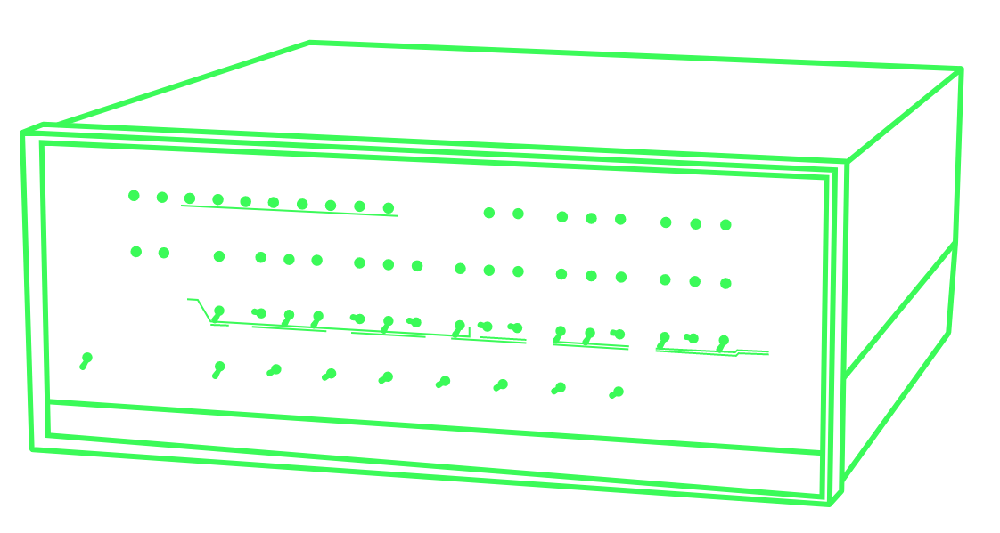
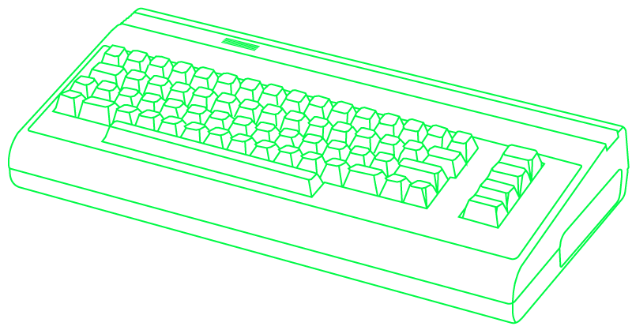
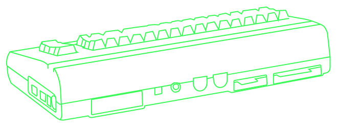

The First Popular Micro Computer
Featured on the cover of the magazine Popular Electronics in January 1975 was the MITS Altair 8800 and this started the new era of the micro computer. Limited as it were, it was still widely popular - though mainly amongst geeks. The MITS could be purchased as a DIY project, and when is was assembled it had eight switches that could be used to program it. Each switch represented one bit in the memory register and instructions were made one byte at a time.
As the micro computers developed and became more advanced, they would have more memory and a build in keyboard. They would also come with some sort of text based interface – typically a specific flavour of a programming language like Basic or something similar.
One of the most well known micro computers was the ZX81, which came out in 1981. This computer had a wide appeal even though it had no more than 1 Kb of RAM. Later extension modules became available, so that you could upgrade to either 16 or 64 Kb. With so much RAM you could type in 64.000 characters of computer code.
The ZX81 was followed by the ZX Spectrum in 1982. This one came with 16 Kb but could be upgraded to 128 Kb. In order to use it, one would have to connect it to a television set and the resolution you’d see would be 256 x 192 pixels which equals to 32 characters across in 24 lines.
Within the next couple of years a myriad of micro computers hit the marked. They were now becoming known as home computers and they include machines from well known brands like
- Acorn
- Amstrad
- Atari
- Commodore
- Texas Instruments
- Sinclair
Two brands ended up stealing the scene - and the market: IBM and Apple.
How to Use a Micro Computer
The most successful micro computer by far was the Commodore 64. It had an 8 bit micro processer with a clock frequency at just about 1 megahertz and 64 Kb of RAM. The really extraordinary thing about the C64 though was it’s extra graphics chip which was able to show 16 colours, 8 sprites, had scrolling capabilities and a resolution of 320x200 pixels (40x25 characters) and it’s sound chip that could play 8 octaves of sound in 3 channels. The multimedia race had begun (although no one used that word yet).
 The C64 was a keyboard with the computer inside, like most other home computers. It did have several connections on the back through witch you could connect other types of hardware like joysticks, midi instruments an external storage device and a television set.
The C64 was a plug-and-play (no one used that word either). When you turned it on, the curser was immediately blinking ready to take commands. The interface was text based and the programming language was Commodore Basic. Anything you wrote would be executed straight away unless you put it into a program. You created programs by adding line numbers in front of your command. This program was written line by line (not necessarily in the right order) and stored in the computers RAM. If you turned the computer off, your work would be lost unless you had stored it on an external storage device.
The computer mouse had been invented, but most people had not seen or even heard of it. So in order
to
open up a program on a Commodore 64, one would have to write directly to the screen (which was
effectively a prompt or a terminal): LOAD “PROGRAM_NAME”,8. The number would be the
device
to connect
with. The Commodore would respond with the following lines:
SEARCHING FOR “PROGRAM_NAME”
LOADING
READY.
The program would now be loaded into the Commodore’s memory. You could have a look at the program by
writing the command LIST or you could start the execution of the program with RUN.
special cassette drive was used as a data storage device.
Software was the edge
In the time of the micro computer software were written specifically for each computer, as they all came with their own operating system build into them. Burned into their microchips where the commands that they understood, and programmers needed to write their programs to the specific machine. The amount of software available for a specific computer played a significant role in it’s success.
This is one of the reasons for the huge success of the Commodore 64. With it’s powerful graphics and sound processors it was a perfect platform for games and it gave programmers a strong platform to developed all sorts. Of the more famous ones one could mention:
- Archon: The Light and the Dark (1983) – A mythical battle chess
- Impossible Mission (1984) - A platform action game
- Pitstop II (1984) – A car race simulation
- Elite (1985) – A space simulation game
- Leaderboard Golf (1986) – A sport simulation
- IK+ (1987) – A fighting game
- International Soccer (1988) – A soccer simulation
- Grand Prix Circuit (1989) – Formula One
- Buck Rogers: Countdown to Doomsday (1990) – an adventure/RPG
- Creatures 2: Torture Trouble (1992) – Platform type
- Mayhem in Monsterland (1993) – A platform type
The Software Operating System
A contester to the micro computer was IBM’s so-called Personal Computer or PC although is was much pricier and did not find it’s way into normal homes straight away. was a much began to change as the new IBM PC (PC for Personal Computer) entered the market. The IBM PC used a software operating system. This had to load on startup, but made it easier to update - simply because you did not need to buy a completely new piece of hardware. The OS (for Operating System) was called MSDOS, this was short for Micro-Soft Disk Operating System (yes, they used a dash in their name in the early days). The code was based on the UNIX operating system although greatly simplified.
From Calculators to Communication Devices
Computers continued to develop. In the micro computer age the computer were mostly used as a very specialized machine. In many cases it was a toy used for gaming or a little bit of home programming. Later that changed, as the internet developed and people began to connect. In the words of Bill Gates, the founder of Microsoft and the developer of MSDOS:
“I think it's fair to say that personal computers have become the most empowering tool we've ever created. They're tools of communication, they're tools of creativity, and they can be shaped by their user.”